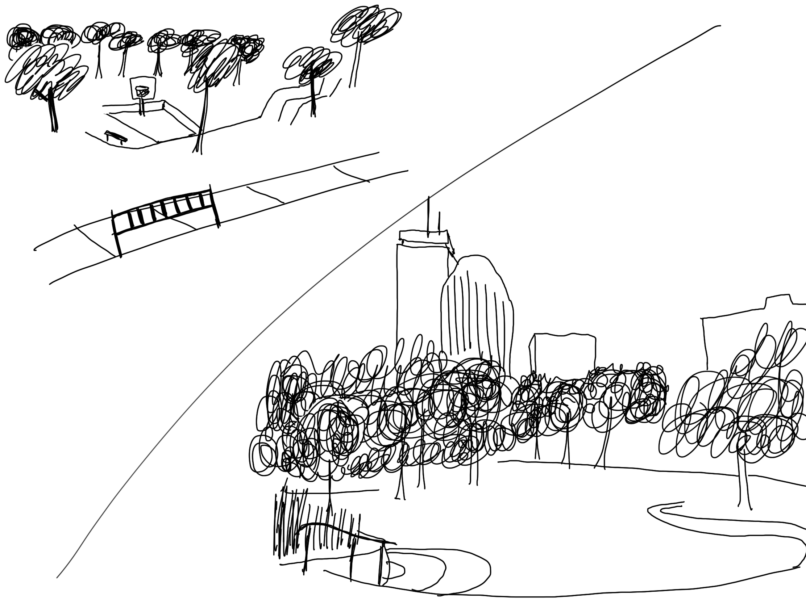

A long-time resident of Durham Street, Titus Sparrow cared deeply for his neighborhood in the South End. He was a devoted tennis player, and began tennis programs for children at nearby Carter Field. Titus Sparrow helped to form the Sportsmen’s Tennis Club , which for decades has provided city children with the opportunity to learn the game at no cost. In 1956, he became the first African-American umpire of the United States Tennis Association. He officiated at the Davis Cup, the U.S. Open, and the Longwood Tennis Club in Brookline. He planned to give free tennis lessons on the court in the new park. At a time when city officials paid little attention to poor minority areas, he encouraged his neighbors to be politically active and take responsibility for their community. He died before the park was completed in 1976. Because of his commitment to his community, the park, which includes a tennis court, was named in his honor.